Production Hardening
Audit an existing or AI-generated codebase for production readiness, review the findings, and fix them with Think4Ever or your own coding agent.
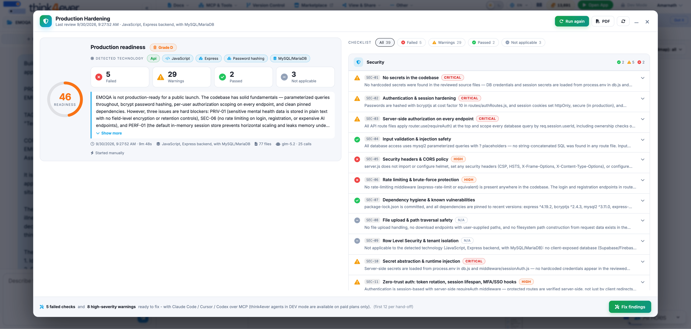
Overview
Production Hardening reviews a codebase against a 39-check production-readiness checklist across nine pillars: Security; Configuration & Environment; Reliability & Error Handling; Data & Database; Observability; Performance & Scalability; Build, Deploy & Operations; Testing & Quality; and Privacy & Compliance. It works on code from any source, whether built on a vibe coding platform such as Lovable, with a coding agent, or by a conventional team.
Each review produces a Production Readiness Score, a verdict with cited evidence for every check, and fix requests you can apply with Think4Ever’s developer agent or with Claude Code, Cursor or Codex over MCP.
How to Run a Production Readiness Review
- On the Think4Ever onboarding screen, choose Production Hardening.
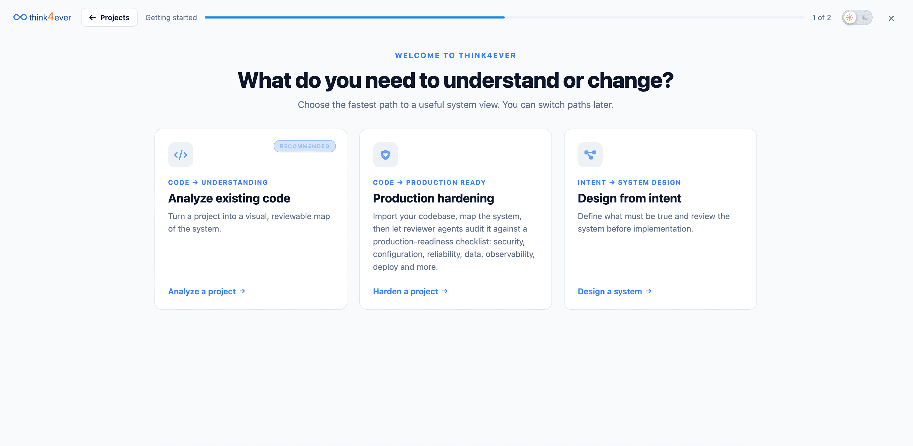
- Import the codebase from a public GitHub repository URL (optionally a specific
branch) or upload a ZIP file. Import private repositories as a ZIP.
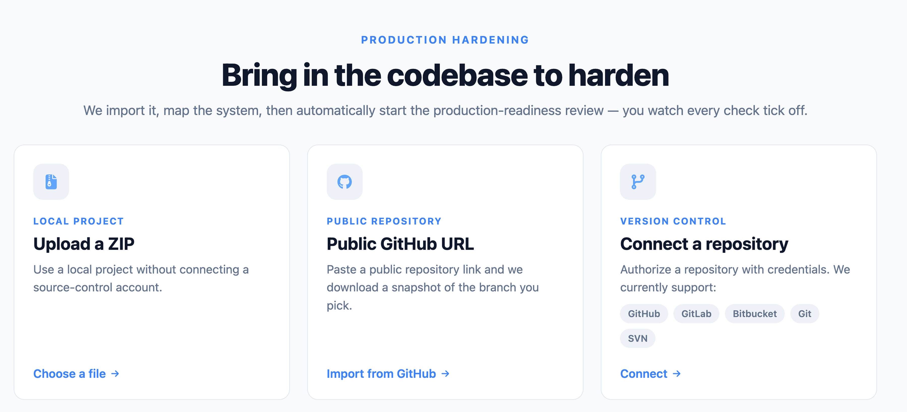
- Think4Ever detects the technology stack and runs its code analysis to build the
concept structure: business flows with the role, screen and data objects of every step, roles and
permissions, and data objects. The review waits for this to finish, because every check is graded
against those flows.
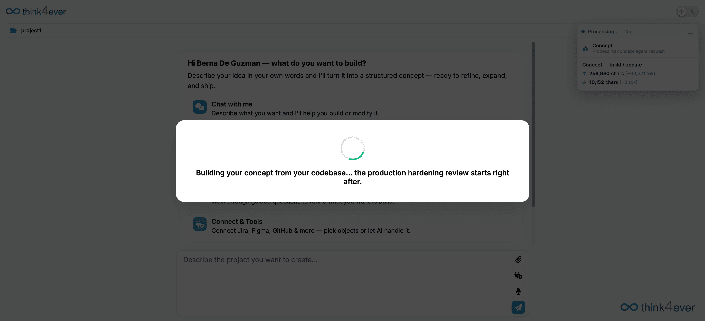
- One reviewer agent per pillar then works through that pillar’s checks. Progress
updates live for each pillar (Figure 2). You can close the window; the review keeps running.
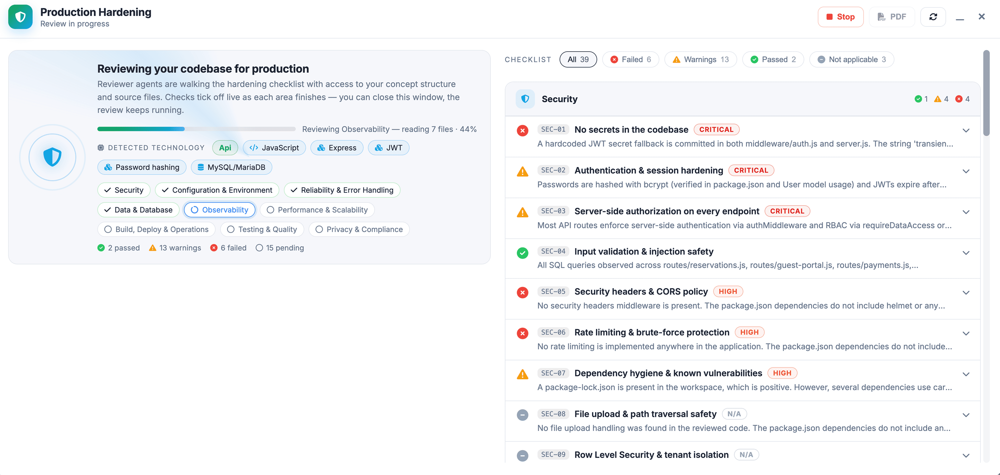
Each pillar reviewer receives the concept summary, the detected technology profile, the workspace file tree and the key files: dependency manifests, Dockerfile, CI configuration, README and entry points. Values in .env files are redacted so only variable names are visible. The reviewer can request further source files in up to three rounds of eight files each.
The review is a static reading of the source. It does not build or run the application or execute its tests.
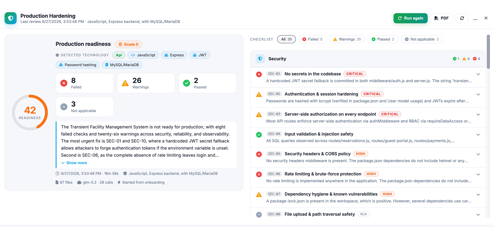
Read the Report
Each check resolves to one of four statuses:
- Passed: the check is met, with the evidence that confirms it.
- Warning: a partial gap, with a severity.
- Failed: a clear gap, with a severity.
- Not applicable: the check does not apply. Checks that structurally cannot apply to the detected stack (for example, Row Level Security for a project with no client-exposed database) are marked Not applicable before any agent call. If a reviewer returns no verdict for a check, it is recorded as an error and shown under Not applicable.
Every result explains its reasoning and cites files and line ranges, so an engineer can verify it directly. Use the filters above the checklist to show failed, warning, passed or not-applicable checks.
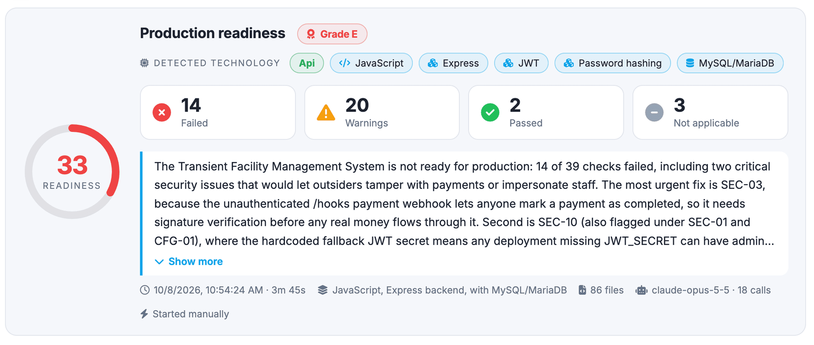
The report header shows the score, grade, counts for each status and a plain-language summary of the most urgent issues. It also records when the run started and how long it took, the detected stack, the number of files scanned, the model used and the number of model calls.
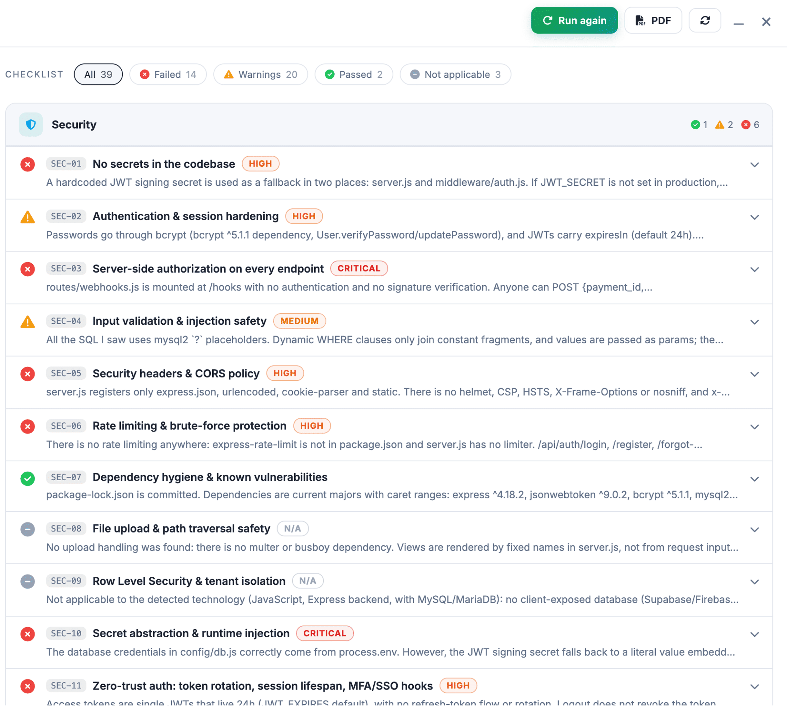
Select Run again to start a new run, or PDF to export the report. Past runs appear in the review history.
Score and Grades
The score is the share of applicable checks that pass, with a warning counting as half a pass:
score = 100 × (passed + 0.5 × warnings) ÷ (passed + warnings + failed), rounded to a whole number.
Not applicable checks, and checks with no verdict, are excluded from both sides of the fraction, so they neither raise nor lower the score. Severity does not change the score; it orders the fixes.
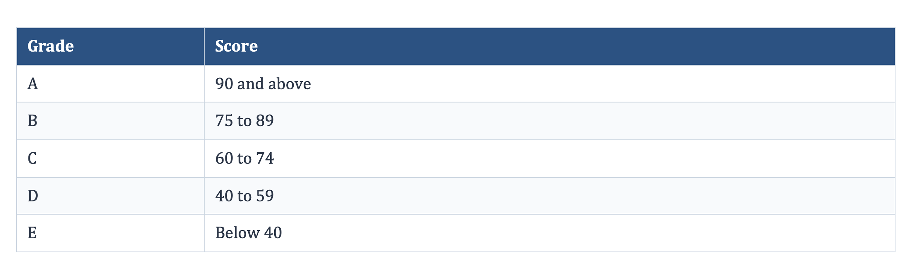
Fix Findings
Select Fix findings to fix in bulk, or Fix this check on a single finding, then choose where to fix. A bulk hand-off covers every failed check plus critical- and high-severity warnings, up to 12 findings at a time.
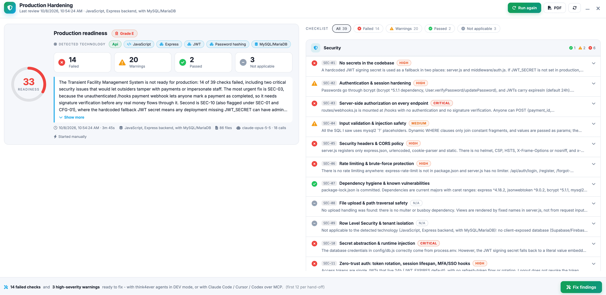
Figure: Fix Findings
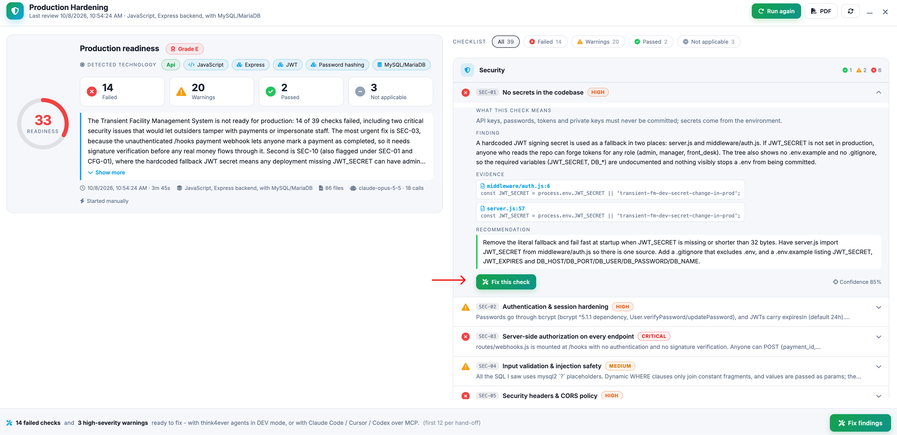
Figure: Fix this check
Fix with Think4Ever’s developer agent (DEV mode)
- The developer agent reads the cited evidence files.
- Before its first change, it presents a plan listing every file it will create, update or delete, what
each change does and which checks it addresses.
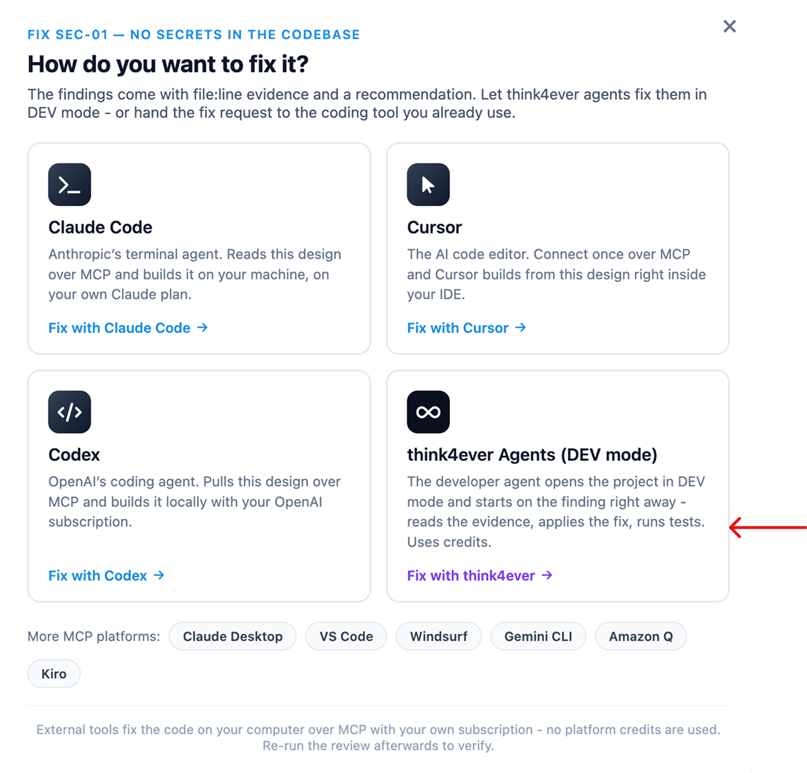
- Select Confirm & Apply to proceed, or Reject to discard the plan. Nothing is modified
until you
confirm.
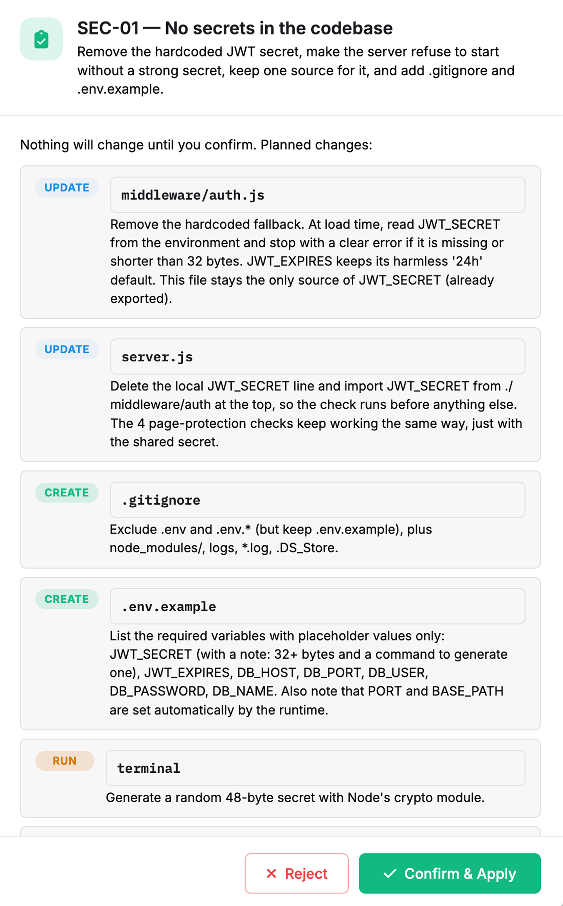
DEV mode uses platform credits. Changes are written directly to the project’s workspace files, not as a pull request or an automatic commit; commit and push to GitHub, GitLab or Bitbucket from the Version Control window. The agent is instructed to run the project’s existing tests or lint after a change when they exist. It does not run the build or tests before proposing changes, and does not generate tests before refactoring untested code.
Fix With your own coding agent (MCP)
Copy the fix request into Claude Code, Cursor or Codex. It contains the findings with their evidence and recommendations, plus the thinkMCP calls that fetch the full results and grading rules. The external tool edits your local checkout under its own subscription, and no platform credits are used.
Note: The review audits the copy of the code in the Think4Ever workspace. After fixing locally, import the code again (or write it back through the files API) before re-running.
Verifying fixes
The verification of a fix is the next review run. Re-run after each round of changes, and before each release, to catch regressions such as a reintroduced secret or a removed authorization check.
Automate with the REST API and MCP
Reviews can be started and read from the app, the REST API and MCP, so you can trigger them from your own tooling.
- Start a run: POST /v1/projects/{id}/hardening/run with a scoped access token.
- Read a review: requires a token with the projects:read scope.
- Start or stop a review: requires the agents:submit scope.
- Get the checklist with grading instructions: get_hardening_checklist with include_instructions (API and MCP).
Tokens can be limited to specific projects.
Data Handling
- What is ingested: The imported repository archive or uploaded ZIP is extracted into the project’s workspace folder on the Think4Ever cell that hosts your account, where it stays with the project. The review reads that workspace copy only; it never connects to your local machine or to the original repository.
- What the model sees: For each pillar, the reviewer receives the concept summary, the file tree (at most 700 entries, six levels deep), the key files (up to 6,000 characters each, with .env values redacted to variable names) and at most 24 further requested files (eight per round, three rounds). Files larger than 400 KB are never read. The whole repository is not sent to the model.
- What is stored: The run headline (score, grade, counts, stack, model, call count and duration) and every verdict with its finding, evidence snippets and recommendation are stored in the platform database with the project’s other data, so runs can be compared and exported.
- Which models: The model is selected per work type from the platform defaults or your own per-work-type preference, and is recorded on every run. The platform default is an Anthropic Claude model for cells in the Americas and Europe, and GLM-5.2 for cells in Asia-Pacific. Customers on a personal-key plan run the review with their own provider key.
- Access: Every read and write goes through the platform’s company-aware ownership check. API and MCP access requires the scopes listed above.
The Checklist
The 39 checks below are the checklist as implemented on 24 September 2026. The default severity applies to a failure unless the reviewer raises or lowers it for the specific finding. Each check also carries detailed grading instructions for the reviewer, available through the API and MCP.
- Security Checks (11 checks)
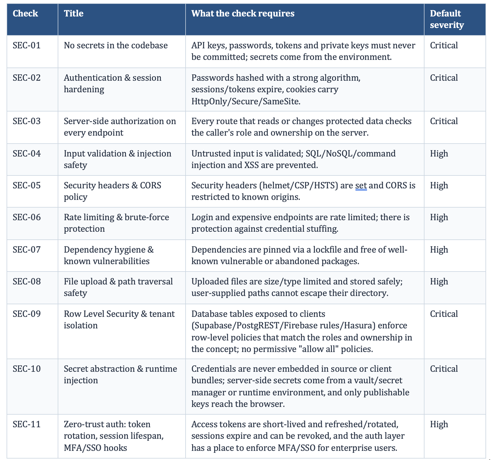
- Configurations & Environment (3 checks)
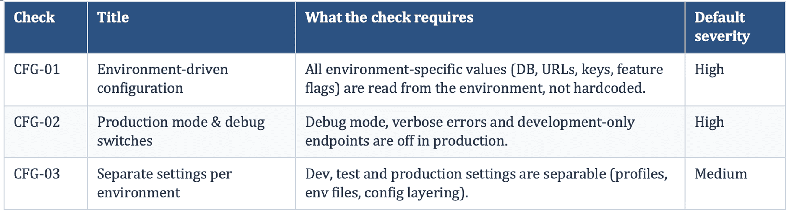
- Reliability & Error Handling (4 checks)
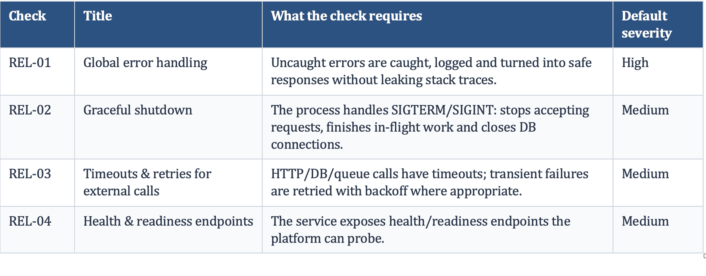
- Data & Database (5 checks)
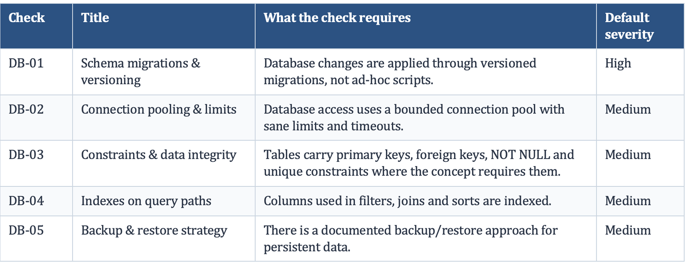
- Observability (5 checks)
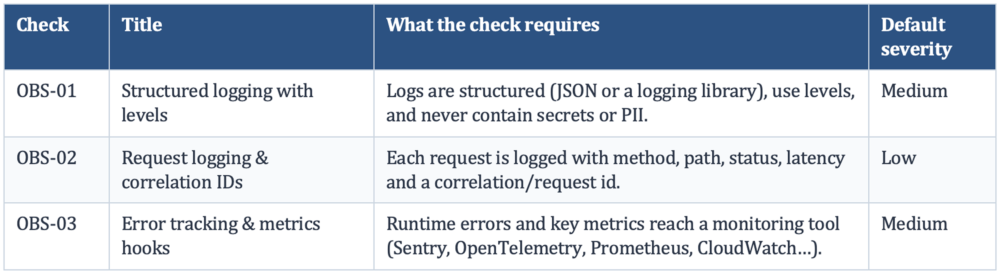
- Performance & Scalability (4 checks)
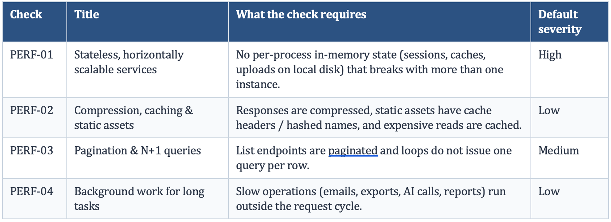
- Build, Deploy & Operations (4 checks)
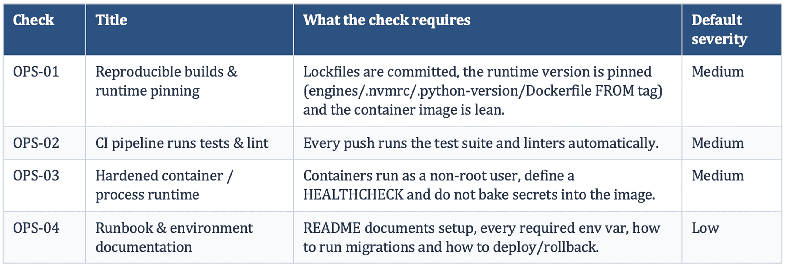
- Testing & Quality (3 checks)
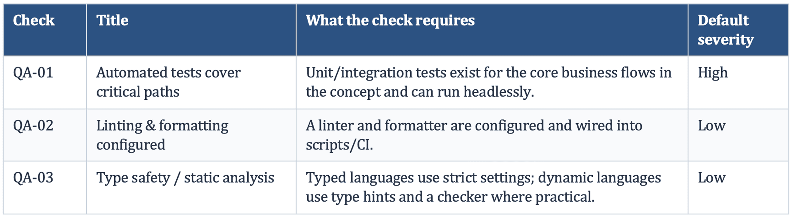
- Privacy & Compliance (2 checks)
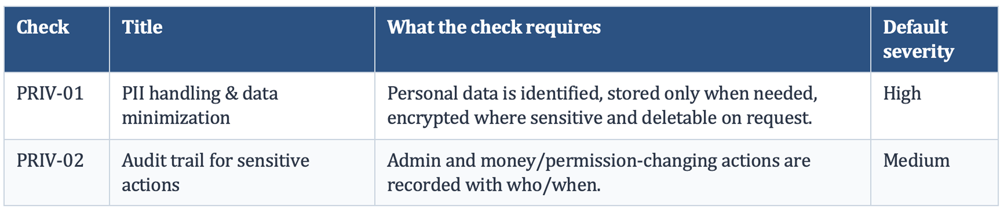
FAQ (Frequently asked questions)
Does this replace my platform’s built-in security scan?
No. Keep using it. Platform scanners check security configuration on that platform; Production Hardening
covers all nine pillars and works on code from any source.
Is the readiness report a SOC 2
certification?
No. SOC 2 is an attestation issued by an independent auditor about an organization’s controls. The report
is evidence: it documents what was checked and found, and several checks (such as SEC-03, SEC-09, PRIV-01
and PRIV-02) cover controls that SOC 2 and GDPR reviews examine.
Should I still run a penetration
test?
Yes, before a major release. Production Hardening is a static review of the source; a penetration test
exercises the running application.